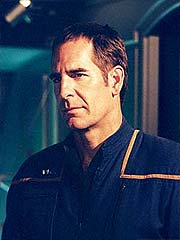
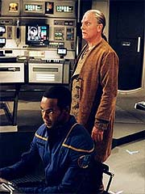
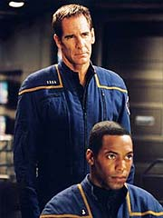
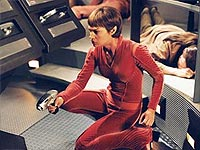

|
MANCHETE
DO EPISÓDIO
Trama
interessante critica os males
do extremismo religioso na Extensão
Episódio
anterior | Próximo
episódio
Sinopse:
Trip e Mayweather estão realizando estudos em uma Esfera. Ele são observados por alienígenas conforme saem do campo de camuflagem.
A Enterprise recebe um pedido de socorro de uma nave danificada e resgata um grupo de alienígenas humanóides, da mesma espécie que estava observando as ações do shuttlepod com Trip e Travis. Os Triannons, como são conhecidos, são levados à enfermaria, e quando Archer pergunta sobre sua condição, Phlox diz que não pôde fazer observações médicas detalhadas. Os Triannons consideram os rastreios invasivos e contra sua religião.

Archer convida o líder, D'Jamat, para jantar com ele e T'Pol no refeitório do capitão, após sua dispensa na enfermaria. No jantar, D'Jamat conta a T'Pol e Archer que estão aqui para venerar a Esfera e que, por oração e meditação, Os Construtores, os que criaram as Esferas, irão se revelar. Ele mostra a T'Pol seu braço, com a pele retorcida por uma anomalia espacial.
Ele diz a ela que esse é um sinal de que Os Construtores estão próximos. Ele e T'Pol discutem o número de Esferas existentes e entram num acalorado debate; ele acredita que sejam milhares, ela está certa de que são 59. Após Archer interceder, D'Jama diz esperar ter a chance de recompensar pela gentileza do capitão.
Mais tarde naquela noite, D'Jamat discute planos com outros dois, para tomar o controle da nave. Um deles, chamado Yarrick, expressas dúvidas sobre sua missão. D'Jamat o assegura de que tomar a Enterprise é o único modo de encerrar o derramamento de sangue em seu mundo.
Após sua reunião, D'Jamat visita Archer e diz a ele que estão tomando controle da nave. Se houver alguma reação, seu povo está preparado para se sacrificar usando um explosivo orgânico. Para provar isso, D'Jamat ordena que um de seus homens cometa suicídio. Ele explode, causando uma ruptura no casco e a morte de um tripulante que o acompanhava. D'Jamat diz a Archer que dois de seus homens estão próximos ao núcleo de dobre. Se Archer não der a ele o comando da nave, ele a explodirá.
Assim, os Triannons ocupam as principais posições da nave e isolam a maioria da tripulação não-essencial em seus alojamentos. D'Jamat vai à ponte e ordena Mayweather a levá-los a Triannon. Então ordena que T'Pol solte as travas que prendem sua nave à Enterprise e a destrua.
Um pouco depois, Archer é levado ao Centro de Comando, onde D'Jamat espera por ele. O líder Triannon diz que eles estão a caminho de seu mundo, que durante o último século esteve em guerra com um grupo que ele considera herege. Com a Enterprise, D'Jamat poderá fazer um ataque decisivo e final para encerrar o conflito. Ele diz também que não só os infiéis Triannons, mas todos os infiéis no Cosmo Escolhido ("Chosen Realm", seu nome para a Extensão) serão destruídos.
D'Jamat informa Archer de que tem vasculhado seus arquivos de computador e de que a tripulação da Enterprise cometeu vários atos de sacrilégio. Sua crença o instrui a destruir a tripulação por seus atos, mas ele está levando em conta que a NX-01 também veio em seu resgate. Ele diz que Archer precisa escolher apenas um tripulante para morrer. D'Jamat então apaga todos os arquivos contendo informações sobre a Extensão.
Após seis horas, o tempo que D'Jamat deu a Archer para decidir quem irá ser condenado se esgota. O capitão visita o alienígena e diz que decidiu que ele será o sacrificado. Ele pede, entretanto, que seja usado um aparelho para a execução que é considerado mais civilizado --o teletransporte! Archer entra nele, T'Pol move as alavancas e ele sumiu.
Depois, Yarrick volta a questionar D'Jamat sobre tantas mortes e o porquê de a tripulação humana ser inimiga. D'Jamat lembra que questioná-lo é questionar os Criadores e que isso é uma heresia. Embora Yarrick aceite a posição, ele continua em dúvida.
Na enfermaria, Phlox recebe uma "mensagem" de Archer, que está escondido no interior da nave. Archer quer que ele neutralize o aparelho explosivo orgânico nos corpos dos Triannons, mas Phlox precisa de rastreios do interior do corpo deles para fazê-lo. Archer vai ao corredor, derruba um guarda Triannon, obtem as leituras e envia a informação a Phlox.
Enquanto isso, um guarda informa D'Jamat, que está no gabinete do capitão, de que um dos guardas não responde. Eles vão à ponte para que possam usar os sensores internos e localizá-lo. De repente, há flutuações de energia na ponte, a nave sai de dobra e a energia principal falha.
D'Jamat pergunta a T'Pol de onde eles estão sendo sabotados, mas a Vulcana diz não saber. Então vemos Archer mexendo em alguns cabos e relés. D'Jamat vai à engenharia, e Trip nega ter feito algo para sabotar a nave. Outro guarda diz a D'Jamat que há um problema com um relé EPS no deck D. Yarrick e o guarda vão ver qual é o problema. Archer os surpreende, tonteando o guarda. Ele pede que Yarrick o ajude e consegue persuadi-lo.
Archer diz a Yarrick que Phlox sintetizou um agente aére o para neutralizar uma das enzimas no explosivo orgânico. Os controles ambientais precisam ser desviados para a enfermaria, a partir da ponte. Archer mostra a Yarrick como fazer isso.

Na ponte, D'Jamat contata a nave capitânea de um comboio que os alcançou. Ordena que eles se rendam. Quando vem a recusa, ele ordena sua tripulação a atirar contra eles. O combate começa, e a Enterprise destrói duas das naves inimigas.
Archer vai aos aposentos de Malcolm e dá a ele um rifle feiser. Pede que liberte os MACOs para a retomada da nave.
Yarrick vai à ponte para reportar sobre os motores de dobra. Ele então vai até o painel de controle apropriado e digita os comandos para desviar os controles ambientais da ponte para a enfermaria.
Lá, Phlox liberta seu morcego Pyrithiano para distrair o guarda. Em dado momento, o guarda baixa a arma e vira de costas para Phlox, que o derruba com um sedativo. O médico então libera o agente anti-enzimático no ambiente.
Enquanto isso, Archer e Malcolm recuperam o controle sobre a sala de armamentos e, depois, a engenharia. Na ponte, as armas pararam de funcionar. A voz de Archer, vinda do intercom, informa D'Jamat de que as funções de comando estão agora desviadas para a engenharia, e que ele desligou as armas.
Nesse ponto, Malcolm e os MACOs entram na ponte atirando. Há um tiroteiro entre eles e os Triannons. Os humanos prevalecem, e Malcolm contata Archer para dizer a ele que recuperaram a ponte. Ele também pede que devolva força às armas, pois a nave inimiga segue atirando.
Archer, de volta à ponte, contata a outra nave e diz que agora está no comando da Enterprise, desligando suas armas. A outra nave se afasta.
Algum tempo depois, o capitão tira D'Jamat de sua cela e o leva a seu mundo num shuttlepod. Durante o tempo em que ele e seus seguidores estiveram fora, os Triannons em guerra se destruíram mutuamente. Só restou um planeta em destroços.
Comentários:
"Chosen Realm" representa mais um passo na curva de aprendizado dos roteiristas de
Enterprise, ao lidar com o conceito de arco. Desta vez eles se saíram com um segmento que não só é extremamente relevante para a continuidade do tema da investigação das Esferas e da Extensão Délfica como também ecoa preocupações contemporâneas, novamente num estilo bastante próximo ao da
Série Clássica.
O enredo mais uma vez remete à ordem do dia, com fanáticos religiosos que tomam posse da Enterprise para com ela desferir um ataque mortal contra os hereges (fosse a realidade do século 21, seriam os "infiéis"). Sem dúvida foi uma remissão muito mais feliz e apropriada ao inevitável tema do terrorismo religioso, despertado com muita força após 11 de setembro de 2001, do que a vista anteriormente em
"The Expanse".
A grande sacada do episódio é mostrar que não é a fé ou os princípios religiosos que são ruins --assim como não existe islamismo ou qualquer outro conjunto de crenças ruins--, o que há são formas intolerantes e inconseqüentes de aplicar esses princípios.
A costura de elementos, não só com o seqüestro da Enterprise e a motivação religiosa dos invasores, mas com a presença de "homens-bomba" e perseguição a infiéis, torna a analogia toda muito óbvia --mas não barata. O trabalho com o tema é positivo e a visão transparecida é saudável.
Ainda assim, diferentemente de outros segmentos inspirados em dramas humanos reais nesta temporada, como
"Twilight" e "Similitude", "Chosen Realm" ainda mantém a maior parte da qualidade nos aspectos fictícios do tema.

Ele traz novos elementos ao mistério das Esferas e dá algumas pistas --ainda que travestidas de mitologia-- do que pode estar por trás de sua construção. Com certeza é um gancho que vale a pena ser explorado no futuro.
Sem falar que se trata de uma grande aventura, com as melhores qualidades que se deve esperar de um segmento de
Jornada nas Estrelas. O capitão Archer parece mais sagaz do que nunca, e sua solução para o dilema do "sacrifício do tripulante" é digna de James T. Kirk. Tal qual Jim, Archer se recusa a enfrentar a morte, driblando-a.
Talvez esse tenha sido o uso mais efetivo e inteligente do teletransporte ao longo de todos os episódios de
Enterprise! Um equipamento que parece estar deslocado no século 22 (e que felizmente os roteiristas dispensaram para usos corriqueiros) surge como elemento-surpresa (quem diria!) no novo contexto apresentado por Archer.
Para compensar, um momento de relaxamento dos músculos mentais do roteirista Manny Coto apareceu no velho clichê do "seguidor-em-dúvida-que-acaba-se-convertendo-em-aliado". Talvez fosse melhor que Archer e cia. tivessem conseguido retomar o controle da nave sem ajuda de um dos Triannons, até para enfatizar a mensagem de que seguir líderes religiosos cegamente pode ser perigoso.
Alguns elementos adicionais fazem deste um episódio que não pode ser considerado "sem conseqüências" para o futuro da trama. Para começar, o banco de dados acumulados pela Enterprise na Extensão Délfica foi apagado pelos fanáticos --uma perda sem dúvida grave para o esforço de Archer e sua tripulação na caça à arma Xindi. Depois, as Esferas começam a se tornar mais do que mera curiosidade da região, para participar efetivamente do arco como entidades relevantes. Sua introdução foi uma tremenda bola dentro dos produtores desde o início.
Do ponto de vista dos personagens, o enredo não oferece muito. Trata-se de um segmento basicamente moral, sem problemas que apresentem soluções difíceis ou entraves que obriguem alguém da tripulação a se superar. Exceto pelo drible de Archer na morte, não há muito o que destacar nesse sentido.

O astro convidado, Conor O'Farrell, atua convincentemente como
D'Jamat, líder dos Triannons. Sua combinação de ironia, com sede de poder, com cegueira e fé genuína funciona para tornar a história mais realista.
Os valores de produção, como sempre, estão no topo. E o maior destaque talvez seja o cenário desolador de Triannon, após a devastadora guerra que matou todos os habitantes do planeta. A conclusão do episódio lembra muito o clássico
"Let That Be Our Last Battlefield", da terceira temporada da
Série Clássica, até mesmo no estilo gritante em que é apresentada a "moral da história".
A dois passos do brilhantismo, mas ainda assim de forma bastante qualificada,
"Chosen Realm" mostra que a "paz" pode não ser exatamente o que se imagina, quando o caminho escolhido para atingi-la é a guerra. Trata-se de uma mensagem da qual o mundo parece não se cansar, por mais que já tenha feito para que ela ficasse batida.
Citações:
D'Jamat - "Your species is obsessed with numbers; a characteristic of your misguided belief that the secrets of the universe can be revealed through science."
("Sua espécie é obcecada com números; uma característica de sua crença equivocada de que os segredos do universo podem ser revelados pela ciência.")
D'Jamat - "When you sympathize with the enemy, you risk becoming the enemy."
("Quando você simpatiza com o inimigo, arrisca se tornar o inimigo.")
Trivia:
 A produção foi de 21 a 29 de outubro de 2003.
A produção foi de 21 a 29 de outubro de 2003.
Manny Coto comentou sobre o episódio: "A Enterprise encontra um grupo de alienígenas que desenvolveu uma teologia sobre as Esferas da Extensão. É uma teologia muito rígida e a Enterprise quebrou vários tabus, então precisa pagar por isso. O episódio dramatiza onde a intratabilidade do extremismo religioso acaba levando. Fundamentalistas de todos os tipos --uma crença rígida não-baseada em evidências empírica--, isso é o que estou atacando".
Conor O'Farrell apareceu na primeira temporada como Buzaan, em
"Rogue Planet". Ele também esteve em "Little Green Men" (Deep Space
Nine), como o professor Carlson. Gregory Wagrowski também apareceu em
Deep Space Nine, interpretando o capitão Vulcano Solok, em "Take Me Out to the Holosuite".
Ficha
técnica:
Escrito por Manny Coto
Direção de Roxann Dawson
Exibido em 14/01/2004
Produção:
064
Elenco:
Scott
Bakula como Jonathan Archer
Jolene Blalock como
T'Pol
John Billingsley
como Phlox
Anthony Montgomery
como Travis Mayweather
Connor Trinneer como
Charlie 'Trip' Tucker III
Dominic Keating como
Malcolm Reed
Linda Park como Hoshi Sato
Elenco convidado:
Conor O'Farrell como D'Jamat
Vince Grant como Yarrick
Tayler Sheridan como Jareb
Lindsey Stoddart como Indava
David Youse como Nalbis
Gregory Wagrowski como Ceris
Matt Huhn como Triannon
Kim Fitzgerald como tripulante
Episódio
anterior | Próximo
episódio
|